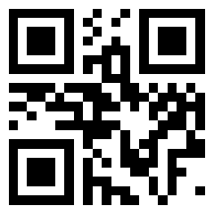

对方证据500页、公证取证、索赔400万——这官司怎么翻盘？
先看结果。
| 项目 | 内容 |
|---|---|
| 案由 | 侵害美术作品著作权纠纷 |
| 原告 | 某视听设备公司（持有作品登记证书、原始底稿） |
| 被告 | 客户公司 + 其他4名被告 |
| 诉讼标的 | 400万元 |
| 原告证据 | 500+页 |
| 不利事实 | 产品外观高度近似，销售时间晚于原告登记时间 |
| 一审结果 | 驳回原告全部诉讼请求 |
| 二审结果 | 驳回上诉，维持原判 |
一个开局看起来"输定了"的案子。
对方证据齐得让人头皮发麻：作品登记证、设计底稿、三家电商平台的公证购买记录，摞起来五百多页。
我们这边的产品，长得确实像。销售时间也确实晚。
怎么办？
一、这个案子难在哪儿
先说背景。
客户是一家做网红视听设备的公司，生产销售一体。产品卖得不错，线上渠道铺得也广——京东、淘宝、天猫都有店。
有一天，被起诉了。
原告是一家同行业的公司，手里拿着美术作品著作权登记证书，还有作品原始设计底稿。人家做了充分准备——去京东买一件，公证。去淘宝买一件，公证。去天猫买一件，公证。
三份公证书，白纸黑字，红章盖着。
原告的诉状逻辑很直白：我登记了美术作品 → 你的产品跟我的一样 → 你卖得比我晚 → 你侵权 → 你赔我 400 万。
这个链条，看起来严丝合缝。
一般的被告，这个时候基本就是谈和解，砍价——从 400 万砍到 200 万，再从 200 万砍到 80 万。
但我们没有。
二、第一个突破口：这是实用艺术品，不是纯美术作品
原告的逻辑起点是"我登记了美术作品著作权"。
但这个起点有个前提：你登记的那个东西，在法律上到底是什么？
《著作权法实施条例》将美术作品定义为：绘画、书法、雕塑等以线条、色彩或者其他方式构成的有审美意义的平面或者立体的造型艺术作品。
注意三个字：有审美意义。
一堆视听设备的零部件——支架、外壳、散热格栅、旋钮布局——这些东西的设计目的，首先是功能性的。散热格栅长那样，是为了散热，不是因为设计师觉得"这样比较好看"。
在著作权法上，这种"既有实用功能又有艺术外观"的东西，有一个专门的称谓：实用艺术品。
实用艺术品的侵权判定：司法实践中的争议
实用艺术品受不受著作权保护？受——但门槛比纯美术作品高得多。
问题在于，怎么判断一件实用艺术品"构成美术作品"从而受著作权保护，目前在司法实践中标准并不统一。主要有两种对立观点：
| 标准 | 核心逻辑 | 代表裁判倾向 |
|---|---|---|
| 物理分离法 | 艺术成分能否在物理上从实用物品中分离出来？能分离的，艺术部分可单独受著作权保护；不能分离的，整体不受保护 | 较保守，保护范围窄 |
| 观念分离法 | 艺术成分能否在观念上独立于实用功能而存在？即使物理上不能拆开，只要艺术设计不是功能决定的，就可以受保护 | 较开放，保护范围宽 |
此外还有法院采用"整体判断法"——不单独看艺术成分，而是综合判断产品整体是否达到"较高的审美高度"。
三种标准并行，导致同一个产品外观，在不同法院可能得出完全相反的结论。
这就是实用艺术品侵权案件的"灰色地带"——标准不统一，意味着空间不统一。
本案的切入角度
我们没有去硬碰"这个东西有没有审美意义"的抽象辩论。
而是做了一个更底层的工作：把客户产品的每一个部件拆开，逐一分析它的设计目的。支架的角度为什么是这个角度？因为要承重。外壳的弧度为什么是这个弧度？因为要容纳内部电路板。旋钮的排列为什么是这样？因为要方便操作。
论证逻辑是：
你的外观是你的功能决定的，不是你的审美决定的。你的设计选择是"工程师的选择"，不是"艺术家的选择"。
这个角度绕开了"分离标准"的争议——不管用哪种标准，如果你的设计完全是功能驱动的，那连"艺术成分"这个前提都不成立。
先别纠结怎么分离。先问问：这东西到底有没有艺术成分可以分离？
三、第二个突破口：你的底稿是原创吗？
原告提交了原始设计底稿，证明自己是"在先创作"。
我们顺着底稿的时间线往前查。
查到了一个有意思的东西。
在原告底稿标注的时间之前，国外市场上已经有一款外观几乎相同的产品在销售了。
也就是说：原告的"原始底稿"，可能不是"原始"的。
这就涉及到一个基础法律问题：著作权只保护"独创性"，不保护"首创"——你不需要是全球第一个画出来的人，但你得是独立创作的，不能抄别人的。
如果你照着国外已有的产品画了一张图，然后拿去登记——这个"原创性"就要打一个问号。
逻辑变成了：
国外已有产品 → 原告底稿可能是"复制"而非"创作" → 著作权登记的独创性存疑 → 侵权基础动摇
但这里有一个更大的难题。
四、第三个突破口：翻墙取来的证据，法庭认不认？
国外网站上的产品销售信息，你在大陆怎么查？
答案很尴尬：很多国外网站，大陆IP直接访问不了。你需要"科学上网"。
但问题来了——通过翻墙取得的境外证据，在中国大陆法庭上能不能被采纳？
域外证据的采信规则，最高法有一个明确的司法解释：
当事人提供的域外证据，应当经所在国公证机关证明，并经中华人民共和国驻该国使领馆认证。
这对普通当事人来说，门槛极高。
你去亚马逊上找一个三年前的 listing 页面，截了图——然后你要找美国公证员给你公证，再去中国驻美国使领馆做认证？成本且不论，时间就耗不起。
我们的处理方式：区分"域外形成"和"域外公开可获取"。
域外形成需要公证认证，但如果是境外的公开信息——比如电商平台上的公开商品页面——它的性质更接近于"众所周知的事实"或"可从公开渠道获取的信息"而非"需要公证的域外证据"。
同时，我们做了三层补强：
1. 时间锚定：通过第三方网页存档服务（如 Internet Archive / Wayback Machine），证明该页面在特定时间点已经存在，且无需翻墙即可访问存档版本
2. 多源交叉验证：同一个产品，在多个国家的多个电商平台上都有同步销售记录，形成证据链闭环
3. 提交方式合规：证据通过合法途径获取的网页存档提交，由法庭依职权核实，而非直接提交"翻墙截图"
法庭最终采纳了这个思路。
域外公开信息 ≠ 域外形成证据。公开可获取的网页信息，可以通过合法途径（网页存档、第三方工具）提交法庭核实，无需走公证认证全流程。
五、真正的胜负手：举证责任的转移
前面三个突破口，都是"进攻"——主动论证对方有问题。
但这个案子真正的胜负手，是程序。
说清楚这个，需要先理解著作权侵权案件中的举证规则：
| 阶段 | 举证责任在谁 | 要证明什么 |
|---|---|---|
| 第一阶段 | 原告 | ① 我是著作权人；② 被告实施了侵权行为 |
| 第二阶段 | 被告 | 反驳：① 不构成作品；② 不构成实质性相似；③ 存在合法来源等 |
| 第三阶段 | 原告 | 进一步证明自己是合法的著作权人，否则承担不利后果 |
大多数案子停留在第一、第二阶段——原告举证侵权，被告举证不侵权，双方在实体层面拉锯。
我们把这个案子推进到了第三阶段。
第一步：原告举证权属。原告拿出了作品登记证书、原始底稿——第一阶段完成，表面证据成立。
第二步：我们举证反证。通过域外证据，证明了在原告"创作"之前，国外已有相同产品在公开销售。这个反证直接动摇了原告的"独创性"基础——你的底稿可能是照着国外产品画的，而不是独立创作的。
第三步（关键）：权属存疑，举证责任回到原告。一旦被告提供了"合理怀疑"的证据，原告就不能再靠那张登记证书"躺赢"了。登记证书只是一个初步证明，当对方提出了具体的、有针对性的反证时，原告需要进一步举证自己是独立创作的——比如创作过程的记录、设计手稿的演变过程、创作人员的证言等。
第四步：原告举不出。原告未能就"独立创作"提供进一步的充分证据。权属问题陷入真伪不明的状态。
第五步：法庭裁判。根据"谁主张谁举证"的基本原则，原告主张自己是著作权人并指控被告侵权，在权属存疑的情况下，原告未能完成举证责任，应当承担不利后果。
于是：驳回诉讼请求。
这个案子的精髓不在于"我们证明了对方不是著作权人"——我们不需要证明到那个程度。
我们只需要证明到"对方的著作权权属存疑"就够了。
剩下的，交给举证规则。
我不需要证明你的底稿是抄的。我只需要证明你的底稿'可能是抄的'——然后该你自证清白了。
六、普通人能学到什么
这个案子写到这里，不是为了讲"我有多厉害"。
是给你一个认知锚点：看起来板上钉钉的知识产权案件，底层逻辑往往可以拆开重装。
四个关键认知：
| 认知 | 解释 |
|---|---|
| 实用艺术品 ≠ 纯美术作品 | 有实用功能的产品外观，侵权判定标准在司法实践中不统一——标准不统一，就是空间 |
| 登记证书不是免死金牌 | 著作权登记是形式审查，不审查独创性。一旦对方提供反证动摇权属，登记证书的证明力就会大打折扣 |
| 域外证据不一定要走公证认证 | 域外公开可获取信息 ≠ 域外形成证据，公开电商信息可通过网页存档等合法途径提交 |
| 举证规则是武器，不是背景 | 被告不需要把什么都证明清楚。只需要动摇原告的权属基础，让举证责任回到原告身上——剩下的，规则替你干活 |
如果你是创业者、产品经理、电商卖家——你卖的产品被人家拿着著作权证告了，不要直接认怂谈和解。
先问四个问题：
1. 他的东西，是实用艺术品还是纯美术作品？起诉标准用对了吗？
2. 他的底稿，真的是独立创作的吗？有没有更早的"现有设计"？
3. 他的取证和程序逻辑，有没有漏洞？
4. 你能不能动摇他的权属基础，哪怕只是制造"合理怀疑"？
第四个问题，是这个案子的魂。
诉讼的真功夫，不只在实体。程序是你最被低估的盟友。
